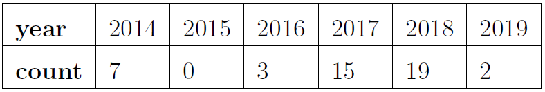
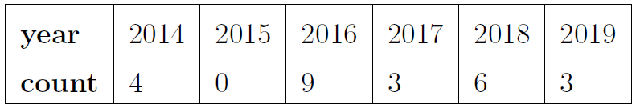

19: Poisson Process
Motivation for the Poisson Process
- Assume a constant \(\lambda\) of arrivals
- Let \(N_{t}\) be the number of arrivals in time interval \([0,t]\)
- Homogeneity: \(\text{E}[N_{t}] = \lambda t\) (``rate times time’’)
- Independence: numbers of arrivals in disjoint time intervals are independent random variables
Goal: Derive distribution of number of arrivals
- We expect \(\text{E}[N_{t}] = \lambda t\) (``rate times time’’)
- Partition time interval \([0,t]\) into \(n\) subintervals
- Assuming \(n\) is large enough so that each subinterval has zero or one arrival (i.e. Bernoulli trial)
- Probability of arrival in a random subinterval: \(p = \displaystyle\frac{\lambda t}{n}\)
So far, we are assuming \(N_{t} \sim \text{Bin}(n,p)\)
\[P(N_{t} = k) = \binom{n}{k} \left(\displaystyle\frac{\lambda t}{n}\right)^{k} \left(1 - \displaystyle\frac{\lambda t}{n}\right)^{n-k}\]
Infinitessimal
However,
- \(n\) was arbitrary
- time is a continuous variable
So let’s take the limit as \(n\) goes to infinity.
\[\displaystyle\lim_{n \to \infty} P(N_{t} = k) = \displaystyle\lim_{n \to \infty} {\color{purple}\binom{n}{k} \left(\displaystyle\frac{\lambda t}{n}\right)^{k}} {\color{blue}\left(1 - \displaystyle\frac{\lambda t}{n}\right)^{n}} {\color{red}\left(1 - \displaystyle\frac{\lambda t}{n}\right)^{-k}}\]
Handling the limit by its factors:
\[\displaystyle\lim_{n \to \infty} {\color{red}\left(1 - \displaystyle\frac{\lambda t}{n}\right)^{-k}} = 1, \quad \displaystyle\lim_{n \to \infty} {\color{blue}\left(1 - \displaystyle\frac{\lambda t}{n}\right)^{n}} = e^{-\lambda t}\]
\[\begin{array}{rcl} \displaystyle\lim_{n \to \infty} {\color{purple}\binom{n}{k} \left(\displaystyle\frac{\lambda t}{n}\right)^{k}} & = & (\lambda t)^{k} \displaystyle\lim_{n \to \infty} \binom{n}{k} \left(\displaystyle\frac{1}{n}\right)^{k} \\ ~ & = & (\lambda t)^{k} \displaystyle\lim_{n \to \infty} \displaystyle\frac{n!}{k!(n-k)!} \cdot \displaystyle\frac{1}{n^{k}} \\ ~ & = & \displaystyle\frac{(\lambda t)^{k}}{k!} \displaystyle\lim_{n \to \infty} \displaystyle\frac{n!}{(n-k)!} \cdot \displaystyle\frac{1}{n^{k}} \\ ~ & = & \displaystyle\frac{(\lambda t)^{k}}{k!} \displaystyle\lim_{n \to \infty} \displaystyle\prod_{i = 0}^{k-1} \displaystyle\frac{n - i}{n} \\ ~ & = & \displaystyle\frac{(\lambda t)^{k}}{k!} \displaystyle\prod_{i = 0}^{k-1} \displaystyle\lim_{n \to \infty} \displaystyle\frac{n - i}{n} \\ ~ & = & \displaystyle\frac{(\lambda t)^{k}}{k!} \\ \end{array}\]
Probability Density Function
Thus, if \(X\) is the number of observed events in this model, let \(\mu = \lambda t\) (was assumed to be constant), and
\[P(X = k) = \displaystyle\frac{\mu^{k}e^{-\mu}}{k!}\]
This is called the probability mass function for the Poisson distribution. The Poisson distribution is a discrete distribution that tends to be used to model rare events.
Expected Value
Here we will derive the expected value for a \(\text{Pois}(\mu)\) distribution.
Recall: By Taylor series, \(e^{x} = \displaystyle\sum_{n = 0}^{\infty} \displaystyle\frac{x^{n}}{n!}\)
Therefore \(\text{E}[X] = \mu\) for a \(\text{Pois}(\mu)\) distribution. Furthermore, \(\text{Var}(X) = \mu\) too for a \(\text{Pois}(\mu)\) distribution.
Examples
Campus Safety: Stalking The following data on reported incidents on stalking comes from the University of California Merced report Safety Matters. Assume a Poisson distribution.

- Find the mean of the data.
- Compute the probability that exactly 2 stalking incidents will be reported this year.

- Compute the probability that at least one stalking incident will be reported this year.

Campus Safety: Drug Law Violations The following data on arrests for drug law violations comes from the University of California Merced report Safety Matters. Assume a Poisson distribution.

- Find the mean of the data.
- Compute the probability that exactly 3 arrests will be made this year.

- Compute the probability that at most one arrest will be made this year.